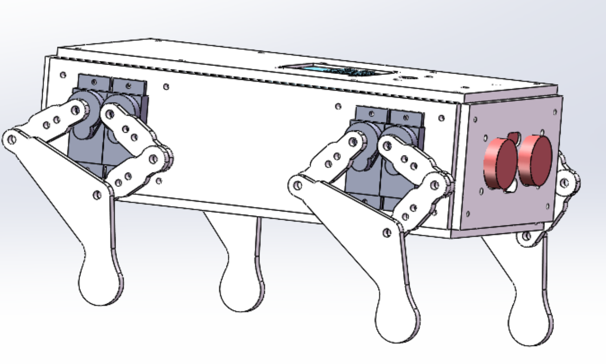
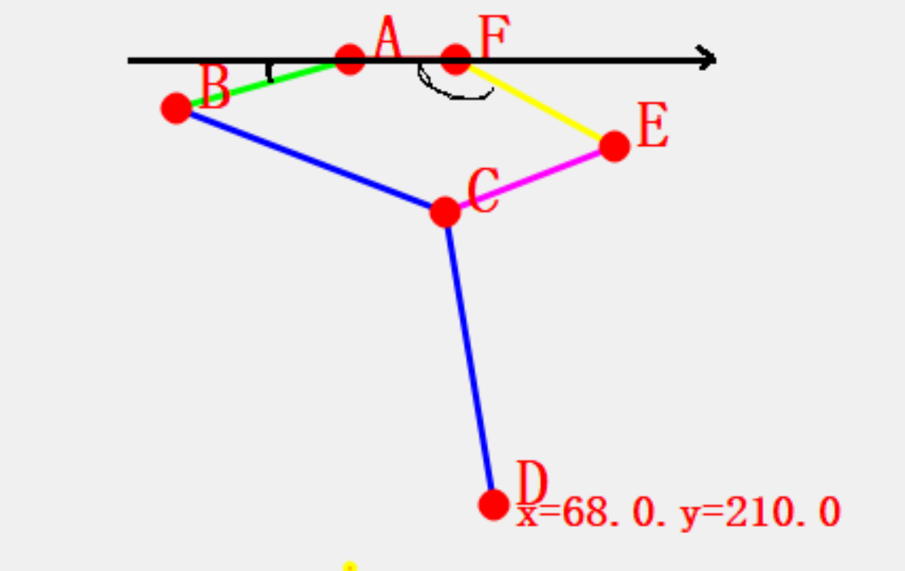

<!DOCTYPE lake>
<h2 data-lake-id="prYNG" id="prYNG"><span data-lake-id="u5a22febf" id="u5a22febf">机器狗移动原理</span></h2><p data-lake-id="uc3d4b2d0" id="uc3d4b2d0"><span data-lake-id="u17591690" id="u17591690">​</span><br/></p><p data-lake-id="u6ddbe0d3" id="u6ddbe0d3"><span data-lake-id="uabe2d073" id="uabe2d073">控制舵机转动实现机器狗足端的移动</span></p><blockquote data-lake-id="udbbcb419" id="udbbcb419"><p data-lake-id="u48e5e829" id="u48e5e829"><span data-lake-id="u60d600d7" id="u60d600d7"> 重点:根据足端坐标获取两个舵机的转动角度</span></p></blockquote><h2 data-lake-id="D1TVM" id="D1TVM"><span data-lake-id="ud3241a88" id="ud3241a88">狗腿反解</span></h2><p data-lake-id="u5f581abc" id="u5f581abc"></p><p data-lake-id="u5d3edced" id="u5d3edced"><br/></p><p data-lake-id="ufca82dc6" id="ufca82dc6"><span class="lake-fontsize-12" data-lake-id="u94b59727" id="u94b59727" style="color: rgb(51,51,51)">在当前的狗腿子中</span><span class="lake-fontsize-12" data-lake-id="ub5c6d55d" id="ub5c6d55d" style="color: rgb(51,51,51)">,</span><span class="lake-fontsize-12" data-lake-id="ude6218c8" id="ude6218c8" style="color: rgb(51,51,51)">我们其实是知道每个关节的长度的</span><span class="lake-fontsize-12" data-lake-id="ub447239d" id="ub447239d" style="color: rgb(51,51,51)">,</span><span class="lake-fontsize-12" data-lake-id="uf9aaeeb3" id="uf9aaeeb3" style="color: rgb(51,51,51)">现在我们其实要做的事情就是已知足端左表</span><span class="lake-fontsize-12" data-lake-id="u91af5335" id="u91af5335" style="color: rgb(51,51,51)">(x,y) , </span></p><p data-lake-id="uf0302124" id="uf0302124"><span class="lake-fontsize-12" data-lake-id="u2fc8bff6" id="u2fc8bff6" style="color: rgb(51,51,51)">求解机械狗上面的舵机需要转动的角度. 这个该如何来进行求解呢?</span></p><p data-lake-id="u0f3c0635" id="u0f3c0635"><span class="lake-fontsize-12" data-lake-id="u41815fa1" id="u41815fa1" style="color: rgb(51,51,51)">为了便于大家学习, 我们先将机械狗模型简化为平面几何,如下图所示:</span></p><p data-lake-id="u3a874686" id="u3a874686"></p><p data-lake-id="u8f446f94" id="u8f446f94"><span class="lake-fontsize-12" data-lake-id="ub6f95b8f" id="ub6f95b8f" style="color: rgb(51,51,51)">我们需要求出上图左表的夹角alpha, 右边的夹角为beta</span></p><h2 data-lake-id="jwg5A" id="jwg5A"><span data-lake-id="uf1db6922" id="uf1db6922">反解代码</span></h2><span class="yuque-card-unsupported">[codeblock]</span><h2 data-lake-id="XdCno" id="XdCno"><span data-lake-id="u593d3056" id="u593d3056">绘制狗腿</span></h2><span class="yuque-card-unsupported">[codeblock]</span><h2 data-lake-id="zmuJh" id="zmuJh"><span data-lake-id="ue8904544" id="ue8904544">完整代码</span></h2><span class="yuque-card-unsupported">[codeblock]</span><p data-lake-id="u38f44521" id="u38f44521"><br/></p>